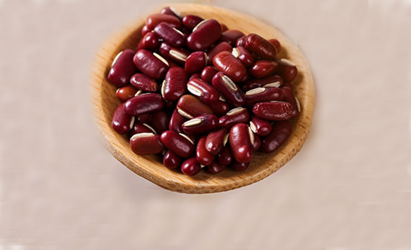
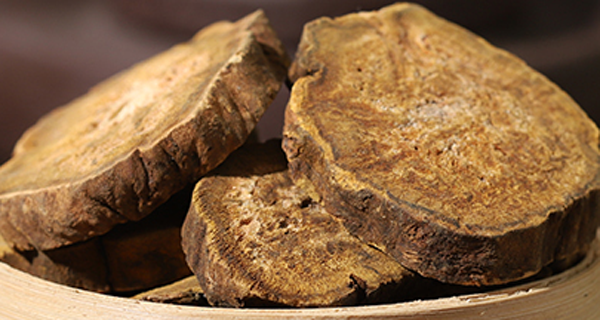
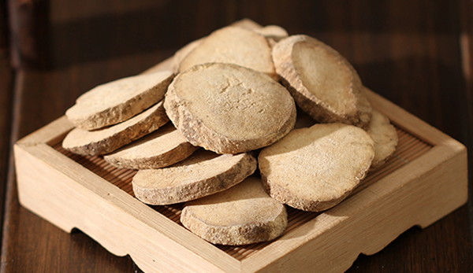
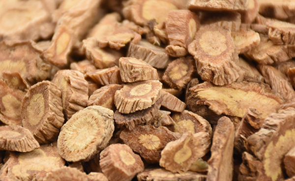

湿气过重对身体是有一定影响的，湿气严重会导致水肿引起体型的虚胖，有很多长期减肥却减不下来的朋友很多都是因为湿气严重导致的。关于怎样除湿减肥，这里有10种祛湿健脾减肥中药配方，它们由多种祛湿药组成的，能有效的健脾祛湿减轻体重。
1、五苓散

五苓散是非常好的祛湿利水的方子，其中有着猪苓、茯苓、白术、泽泻、桂枝组成，其中猪苓、茯苓、泽泻、白术有很好的祛湿的功效，四药合用能有效的去除体内湿气，并且有着健脾的作用。
2、平胃散
平胃散主要由苍术、厚朴、陈皮、甘草组成，厚朴和苍术有着利水渗湿的功效陈皮、甘草健脾和胃，诸药合用有着很好的健脾祛湿的作用。在日常使用不仅可以祛湿减肥，还能调理脾胃。
3、八正散

八正散由车前子、瞿麦、萹蓄、栀子、滑石、木通、大黄组成的，此方有着很好的祛湿利尿的功效，还可以清热泻火，对于体型丰满湿气过大的很容易湿邪郁积，需要清热下火。
4、三仁汤
三仁汤的构成主要是由白蔻仁、杏仁、薏苡仁、半夏、滑石、白通草、竹叶、厚朴八味药组成，有着解肌发表，清热祛湿的功效，能很好的祛湿，对油腻食用过大导致的脾胃虚弱和体型虚胖有很好的治愈作用。
5、二妙散
二妙散由炒苍术、炒黄柏两味药物组成，苍术祛湿、黄柏清热，两药合用有着燥湿清热的功效，对于湿邪过重导致虚胖和泌尿系有问题的情况有很好的治疗作用。
6、四苓散

四苓散由白术、猪苓、茯苓、泽泻四味药组成，四位药都有很好的功效祛湿健脾的功效，并且还能止泻利水，主要能治疗因为湿气过大导致的体型偏胖，湿邪郁积体内引起的水路不调。
7、猪苓汤
猪苓汤由猪苓、茯苓、泽泻、阿胶、滑石组成，主要的功效是养阴清热，祛水利湿，治疗体内湿邪过重导致湿气郁积膀胱引起小便不利，身材偏大。
8、五皮散
五皮散的组成主要是生姜皮、桑白皮、橘皮、茯苓皮、大腹皮，有着很好的祛湿消肿，健脾理气的功效，对治疗体内湿积导致的虚胖有很好的消肿的功效。日常使用可以帮助减肥消肿，调理脾胃。
9、真武汤

真武汤是由茯苓、芍药、生姜、白术、附子构成，能利腹部湿气，对于中年发福，啤酒肚有很好的利水消肿的功效。长期服用可以温脾胃，减肥。
10、羌活胜湿汤
羌活胜湿汤有独活、姜活、防风、甘草、川芎、藁本、蔓荆子这七位药物组成，此方有着祛风除湿，行气止痛的功效，可以治疗因为多食油腻导致的水肿以及尿酸过高导致的通风。
结语：通过上文的介绍，相信大家都了解了关于10种祛湿健脾减肥中药配方，希望大家在日常可以祛湿养身，预防疾病。
了解更多健脾祛湿中成药，为您推荐